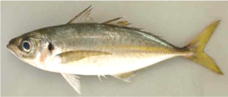

竹荚鱼

竹荚鱼（mackerel）拉丁文名（TRACHURUS TRACHURUS），日语称：あ じ （アジ）也称马鲭鱼。是中上层洄游性鱼类，游泳迅速，喜爱结群。侧线上有似刺一样的硬鳞 -----菱鳞， 菱鳞成为竹荚鱼的特征。 广泛分布于中国、朝鲜、日本沿海及挪威、丹麦、新西兰等冷海水水域。其中挪威、新西兰水域产的竹荚鱼因脂肪含量高，口感细腻、味道佳美成为竹荚鱼中的上品，荷裕食品选用的就是无污染、深海冷水域捕获的新鲜速冻的挪威竹荚鱼。
竹荚鱼蛋白质含量高，富含多种不饱和脂肪酸，特别是DHA，EPA含量丰富（具营养分析报告：ＰＨＡ２８７７ｍｇ、ＥＰＡ９２７ｍｇ），并含有丰富的钙、维生素B1，、牛磺酸等营养元素。经常食用可以营养脑神经,提高智力，并对扩张心脑血管,降低血脂,防止脑中风有极大的益处.